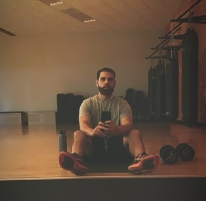
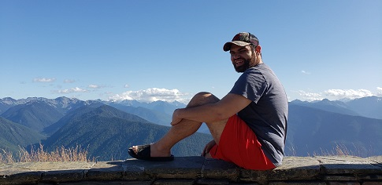

Interests
Nutrition

I am kind of a health nerd. I am very intrigued about how food affects our bodies. I am constantly pumping my self with knowledge about nutrition, whether it's browsing the internet looking at articles and studies or listening to a podcast. One of my favorite podcasts that a friend of mine told me about is called "The Model Health Show," where fitness and nutrition expert Shawn Stevenson shares his experience and knowledge about health and wellness. I enjoy hearing his perspective, which has been a great asset to my journey to becoming a healthier human being.
Excercise
At the end of Summer 2018, I was obese and told myself that I need to make a change, and I did. I made adjustments to my diet and began an exercise program. I disciplined myself over the year and made an effort to lose weight. I have lost over 55 pounds since then, and I feel better than ever. I am a firm believer in hard work paying off, and that's what I needed to do in order achieve my weight loss goals. Over the year I have developed healthy eating habits, and I goto the gym regularly. I also enjoy playing basketball. I like to spend some time at gym shooting hoops or playing pick up games with other people.
Outdoors
I love spending time outdoors. Some of my favorite outdoor activities are camping, hiking, and fishing. I recently went on a camping trip to the Olympic Peninsula with a couple of buddies of mine. We spent five days exploring the Olympics and ended at the beautiful Hurricane Ridge. Fishing has always been a part of me ever since I was a kid. Salmon fishing is by far my favorite type of fishing. I enjoy a good fight with a ten-pounder at the end of my line! Something about being outdoors, just makes me feel whole, maybe its the clean crisp air or the peace and serenity that it brings.
